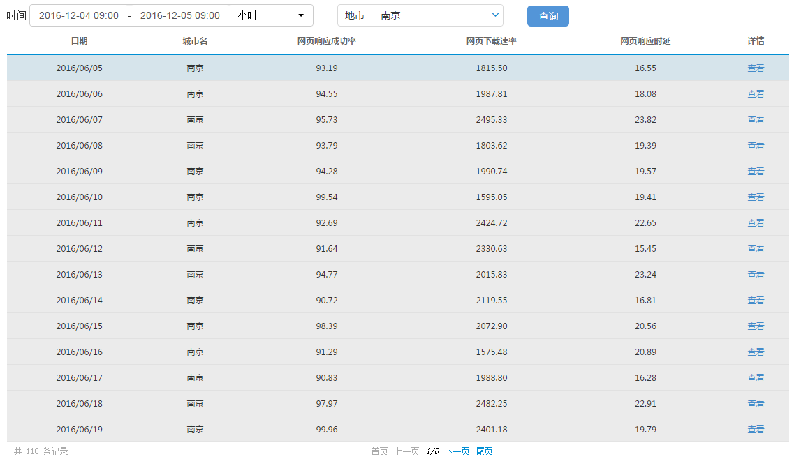

本小节将让 my_first_app 可以在表格中显示查询得到的数据。通过本小节的学习，你将了解到
通过绑定数据源的方式，实现数据在表格呈现并实现分页功能。本小节就来解决此问题。
我们来实现第二个rest服务，和实现第一个服务的方法一样，拷贝任意一个能够正常工作的服务，比如citys.js，并重命名为 webAnalysis.js，代码如下
(function() {
return function(request, script) {
//引入假数据，实际开发不可以引入
require('$svr/mock_api.js');
//打印前端传过来的查询条件
log(request);
var tableUtil = require('app/common/server/util/tableUtil.js');
var sql = 'select clttime,cityname,webrspsuccrate,webdownloadrate,webrspdelay ' +
'from aggr_web_day_month_201607 ' +
'where clttime between "' + request.beginTime + '" and "' + request.endTime +
'" and city in (' + request.citys.join(',') + ')';
var data = matrix(sql);
data.header = ['日期', '城市名','网页响应成功率','网页下载速率','网页响应时延'];
return data;
}
})();
注意到前端传递过来的查询条件都存放在request变量中了。
提示：
这个服务实现过程中，对实际情况做了很多简化，把实际开发过程中可能会碰到的很多问题的隐藏掉了，这些问题在后续的步骤中会一一提出并给出解决方法。
编辑app\my_first_app\web\index.html文件，在body节点中添加：
<rdk_table ds="dsWebAnalysis" ds_url="$svr/webAnalysis" page_size="20">
</rdk_table>
这里引入了一个新的控件rdk_table，注意要使用第三步的方法注入表格的依赖。
在引入表格的时候同时创建了一个名为dsWebAnalysis的数据源，它指向前一小节实现的数据查询服务。
单击了查询按钮之后，我们会发起一次数据查询请求，在请求中带上当前的查询条件，包括
selected_items="selectedCitys" 即可。selectedCitys是scope上的一个属性。下面开始给查询按钮添加单击响应动作，编辑页面，找到button节点，添加一个属性：ng-click="search()"，再编辑js代码，在scope上创建search函数，代码如下：
scope.search = function() {
//由于服务端需要的是选中城市id列表，因此需要先处理一下选中的城市
var citys = [];
angular.forEach(scope.selectedCitys, function(city) {
citys.push(city.id);
});
var ds = DSService.get('dsWebAnalysis');
var condition = {
beginTime: scope.timeSetting.value[0],
endTime: scope.timeSetting.value[1],
citys: citys
}
console.log(condition);
ds.query(condition);
}
一切正常的话，此时单击了查询按钮后，页面看起来是这样的：

注意：
这里城市名显示成了城市的id了，这个问题我们将在后续的步骤中解决。
如果地市条件是必选的，那在用户选中一个地市之前，查询按钮应该是灰色的。编辑页面代码，在button节点中添加一个属性：ng-disabled="selectedCitys.length == 0" 即可。
扩展：
本小节使用到了两个AngularJS原生指令，分别是 ng-click 和 ng-disabled，可以翻阅AngularJS的文档了解他们的用法。
完成了这一步之后，完整的代码可以通过单击这里下载。
BA要求在表格的每一行上可以做点击操作，以显示该行的详情。
查阅表格的文档，找到添加自定义列，该小节介绍了如何在表格中添加交互列。
编辑页面代码，在rdk_table节点上添加属性：setting="setting"，编辑js代码，在scope上添加一个setting属性，值如下：
scope.setting = {
"columnDefs": [
{
title : "详情",
render : '<a href="javascript:void(0)">查看</a>'
}
]
}
这样就可以添加上“详情”列了，刷新一下页面看看效果吧！
接下来我们加上单击后的相应动作。
注意到render属性的值是一个html片段，我们只要把响应动作添加到这个片段中就好了，代码改为：
render : '<a ng-click="appScope.click(item)" href="javascript:void(0)">查看</a>'
注意到这里的appScope是表格内部的一个变量，它和应用的scope是同一个对象。
接下来修改js代码，在scope上添加一个click函数：
scope.click = function(item) {
console.log(item);
var txt = '日期：' + item.clttime + '\n' +
'城市名：' + item.cityname + '\n' +
'网页响应成功率：' + item.webrspsuccrate + '\n' +
'网页下载速率：' + item.webdownloadrate + '\n' +
'网页响应时延：' + item.webrspdelay;
alert(txt);
}
再刷新一下页面就可以看到单击了详情链接的相应动作了。
到此为止，表格上所需的功能我们已经都实现了，现在来考虑一下表格的分页问题。目前我们的app的分页是表格自动完成的，在单次查询数据量较小的时候问题不大，在数据很多的时候，各种性能问题就来了。
我们希望表格能够采用服务端分页的方式呈现数据，即表格每次只从服务端查询一页的数据。
注意：
修改页面代码，找到rdk_table节点，添加属性：paging_type="server"。
修改js脚本代码，修改search函数代码，在condition变量中添加分页信息：
var condition = {
beginTime: scope.timeSetting.value[0],
endTime: scope.timeSetting.value[1],
citys: citys,
paging: {
//一页的记录数
pageSize:20
}
}
修改数据查询服务webAnalysis.js代码，在 var data = matrix(sql); 这一行前面插入如下代码
var tableUtil = require('app/common/server/util/tableUtil.js');
sql = tableUtil.generatePagingSQL(sql, request.paging.pageSize, request.paging.currentPage || 1);
引入了一个库tableUtil.js，调用了这个库的 generatePagingSQL() 函数。
到此，表格的服务端分页功能就完成啦。刷新页面，在表格的分页栏单击下一页的时候，表格会自动发起新的查询请求了。
表格的服务端分页非常常用，基本上所有用于显示数据的表格都使用服务端分页的方式呈现数据。
我们实现了一个数据查询服务，并利用表格呈现这些数据。同时还在表格中添加了“详情”列，可以查看表格一行数据的详情。
最主要的我们实现了表格的服务端分页这个极常用的功能。